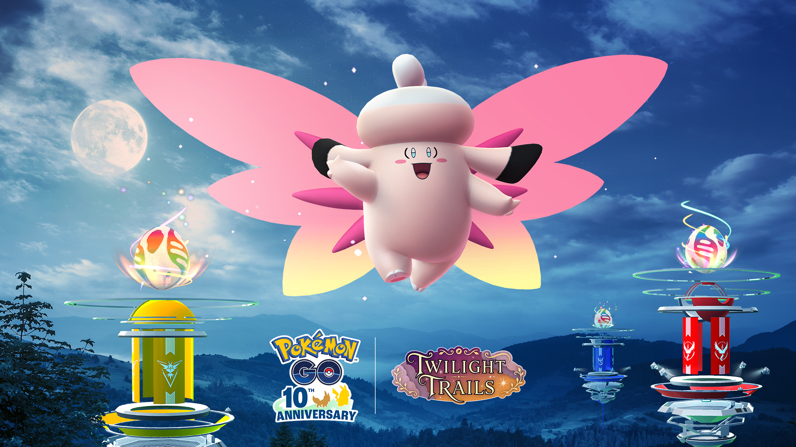
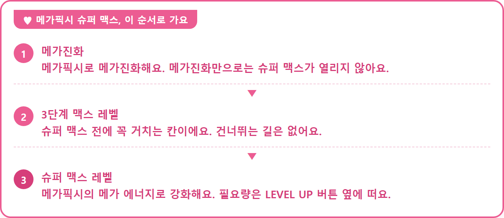
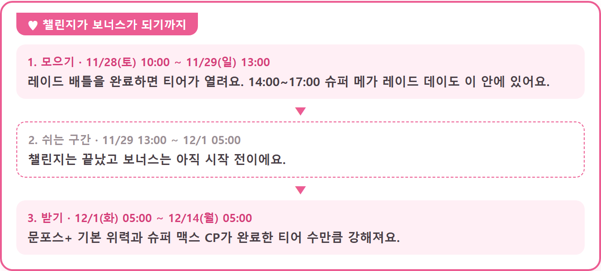

픽시 슈퍼 메가 레이드 데이 11/28, 슈퍼 맥스와 챌린지 보너스
11월 28일 토요일 오후 2시에 메가픽시가 슈퍼 메가 레이드로 처음 등장하는데요, 이번에는 레이드를 돌고 끝나는 날이 아니라 그 뒤 12월 14일까지 보너스가 이어지는 날이에요. 메가픽시도 메가레벨을 슈퍼 맥스까지 올릴 수 있게 되는 첫 이벤트이고, 다 같이 레이드를 채우는 글로벌 챌린지가 12월 1일부터 메가픽시를 더 강하게 만들어 주거든요.
저는 레이드패스를 몇 장 받느냐보다 '내 메가픽시를 어디까지 키워 둬야 이 보너스를 제대로 받느냐'가 더 궁금해서, 일정 세 구간, 육성 순서, 챌린지 보너스, 무료와 티켓 차이 순으로 풀어 볼게요 ㅎㅎ 아래 내용은 11월 11일에 나온 공식 공지를 바탕으로 했고, 아직 안 나온 값은 글 아래쪽에 한 번에 적어 뒀어요.

분홍 날개를 펼친 메가픽시가 달 뜬 밤하늘 한가운데에 있어요.
출처: Pokémon GO 공식 공지 / Niantic (pokemongo.com)
픽시 슈퍼 메가 레이드 데이 일정, 시간대가 세 개라고요?
픽시 슈퍼 메가 레이드 데이는 11월 28일 토요일 오후 2시부터 5시까지이고, 여기에 챌린지 구간과 보너스 적용 구간이 따로 붙어서 시간대가 세 개나 되더라고요.
- 글로벌 챌린지·리모트 레이드 상한 20회: 11월 28일(토) 오전 10시 ~ 11월 29일(일) 오후 1시
- 슈퍼 메가 레이드 데이: 11월 28일(토) 오후 2시 ~ 5시
- 챌린지 결과 보너스 적용: 12월 1일(화) 오전 5시 ~ 12월 14일(월) 오전 5시
레이드 데이 세 시간은 챌린지 구간 안에 들어가죠. 챌린지에 세어지는 레이드 기준은 공지에 없어서 글 아래쪽 목록에 적어 뒀어요.
메가픽시 슈퍼 맥스는 어떤 순서로 키우나요?
메가픽시는 메가진화로 시작해서 3단계 맥스 레벨까지 올려 둔 뒤, 메가픽시의 메가 에너지로 슈퍼 맥스 레벨을 올리는 순서예요.
슈퍼 맥스는 메가레벨의 네 번째 칸인데요, 지금까지는 3단계(맥스 레벨)가 끝이었는데 그 위에 한 칸이 더 생겼어요. 공지에 분명히 적힌 건 메가진화만으로는 슈퍼 맥스가 열리지 않고, 메가 레이드에서 모은 해당 포켓몬의 메가 에너지가 있어야 한다는 점이에요. 올리면 이렇게 달라지거든요.
- CP가 크게 늘어요
- 같은 타입의 포켓몬을 잡을 때 사탕, XP, 사탕XL이 많이 나와요
- 메가 에너지 없이 다시 메가진화할 때 휴식 시간이 24시간으로 줄어요
슈퍼 맥스 공통 안내만 있어서 메가픽시만의 CP 증가폭은 아직 안 나왔어요. 필요한 메가 에너지 양도 마찬가지인데, 공식 화면 예시를 보면 LEVEL UP 버튼 옆에 필요량이 떠요.

이번에 같이 생기는 스페셜 어택은 '문포스+'인데요, 트레이너 배틀에서는 위력 80이고 상대의 공격을 1단계 떨어뜨릴 수도 있고, 레이드에서는 위력 160이에요. 메가레벨이 오를수록 위력도 같이 오르고 거기에 챌린지 보너스까지 얹히니까, 슈퍼 맥스까지 키우는 쪽이 이득이 커 보이죠.
글로벌 챌린지 보너스는 언제부터 어떻게 적용되나요?
글로벌 챌린지는 11월 29일 오후 1시에 끝나고, 그 결과로 정해진 보너스가 12월 1일 오전 5시부터 14일 오전 5시까지 메가픽시에 적용돼요.
- 메가레벨 1단계 이상인 메가픽시의 문포스+ 기본 위력이 강해져요 (GO배틀리그에는 적용되지 않아요)
- 슈퍼 맥스 레벨 메가픽시의 CP가 강해져요
얼마나 강해지는지는 챌린지에서 완료한 티어 수에 따라 달라지니까, 다 같이 레이드 배틀을 채울수록 12월 1일에 받는 보너스가 커져요. 챌린지가 끝나는 일요일과 적용이 시작되는 화요일 사이에는 이틀 가까이 빈 구간이 있어서, 레이드를 돌자마자 강해진 메가픽시를 쓰는 건 아니거든요.

구조는 10월 말 메가샹델라 때와 똑같더라고요. 그때도 10월 31일부터 11월 1일까지 챌린지가 열리고 이틀쯤 뒤인 11월 3일부터 13일 동안 스페셜 어택 위력과 슈퍼 맥스 CP가 강화됐는데, 이번에는 스페셜 어택이 문포스+로 바뀌고 날짜가 12월로 옮겨졌을 뿐이죠.
무료 보너스와 이벤트 티켓은 뭐가 다른가요?
무료만으로도 체육관 포토디스크로 레이드패스를 최대 6개까지 받고, 4.99달러(현지 동등가) 이벤트 티켓을 사면 레이드패스가 최대 14개까지 늘어나요.
| 구분 | 받는 것 |
|---|---|
| 무료 | 리모트 레이드 상한 20회(11/28 10:00 ~ 11/29 13:00) · 레이드패스 최대 6개(시각은 공지에 따로 없어요) · 이 레이드에서 잡은 픽시는 메가레벨 1단계 해금 상태 · 색이 다른 픽시 확률 증가 |
| 이벤트 티켓 4.99달러 (11/28 14:00 ~ 17:00) | 레이드패스 최대 14개 · 이상한사탕XL 확률 증가 · 슈퍼 메가 레이드 XP +5,000, 별의모래 +5,000 · 그레이트 프렌드 이상에게 선물 가능 |
시간제한 리서치는 과제를 마치면 프리미엄 배틀패스를 받고 메타그로스를 만날 수 있어요. 웹스토어의 하이퍼 티켓 박스(4.99달러)는 이벤트 티켓에 프리미엄 배틀패스를 무료로 얹은 묶음이고요.
- 글로벌 챌린지에 세어지는 레이드 기준, 티어 개수, 티어별 달성 기준, 보너스 강화 수치
- 메가픽시 슈퍼 맥스에 필요한 메가 에너지 양, 슈퍼 메가 레이드 한 판당 얻는 메가 에너지 양
- 시간제한 리서치 시작일과 기간, 메타그로스 만남 외의 보상
- 메가픽시 타입 (공지 본문에는 표기가 없고, 해외 팬 사이트 Pokémon GO Hub 정리로는 페어리·비행이라고 해요)
당일엔 이렇게 갈려요
· 티켓 없이 가볍게 갈 때: 체육관 포토디스크를 돌려 패스를 미리 채워 두는 게 좋아요. 그래야 오후 2시에 바로 달릴 수 있거든요.
· 집이라 체육관이 멀 때: 리모트 레이드 상한이 20회로 올라가니까 자리에서 최대한 돌 수 있어요.
· 티켓을 살 때: 패스를 6개보다 더 쓸 계획이면 맞고, 그게 아니면 무료 구성만으로도 충분히 즐길 수 있어요.
자주 묻는 질문
Q. 문포스+는 메가진화를 안 하면 못 쓰나요?
영어 공지에는 메가진화한 상태에서만 쓸 수 있다고 나와 있어요. 평소 모습의 픽시로는 쓸 수 없고, 메가픽시일 때만 스페셜 어택 목록에 들어오는 거죠.
Q. 이벤트 티켓은 포켓코인으로 살 수 있고 환불도 되나요?
포켓코인으로는 살 수 없고 환불도 불가능합니다. 인게임에서 사려면 이벤트가 끝나는 오후 5시까지만 가능합니다.
저는 28일엔 패스부터 채우고, 슈퍼 맥스 필요량은 LEVEL UP 화면에서 직접 보고 정하려고요. 보너스가 12월 14일까지 이어지니까 느긋하게 달려 봐요~
✔ 포켓몬 GO 같이 보기 좋은 내용
· 포켓몬고 얻는법 와일드 에리어 스페셜리서치 강철·드래곤 메달 2종
· 포켓몬고 은색병뚜껑 대단한 특훈, HP 공격 방어 뭘 고를까
· 포켓몬고 무한다이노 맥스배틀 11월 21일 11시~14시 사탕 파밍 동선
참고한 곳 (2026.11.11 기준)
· 포켓몬 GO 공식 뉴스 — "픽시 슈퍼 메가 레이드 데이"에는 달빛 아래에서 춤을 추세요!
· 포켓몬 GO 공식 뉴스 — "Pokémon GO Tour: 칼로스지방" 동안 "Pokémon GO"의 메가진화가 업데이트됩니다!
· 포켓몬 GO 공식 뉴스 — 으스스한 불빛이 기다리는 "샹델라 슈퍼 메가 레이드 데이"!
· Pokémon GO 공식 뉴스(영문) — Dance under the moonlight during Clefable Super Mega Raid Day!
· Pokémon GO Hub — Super Mega Clefable Raid Day